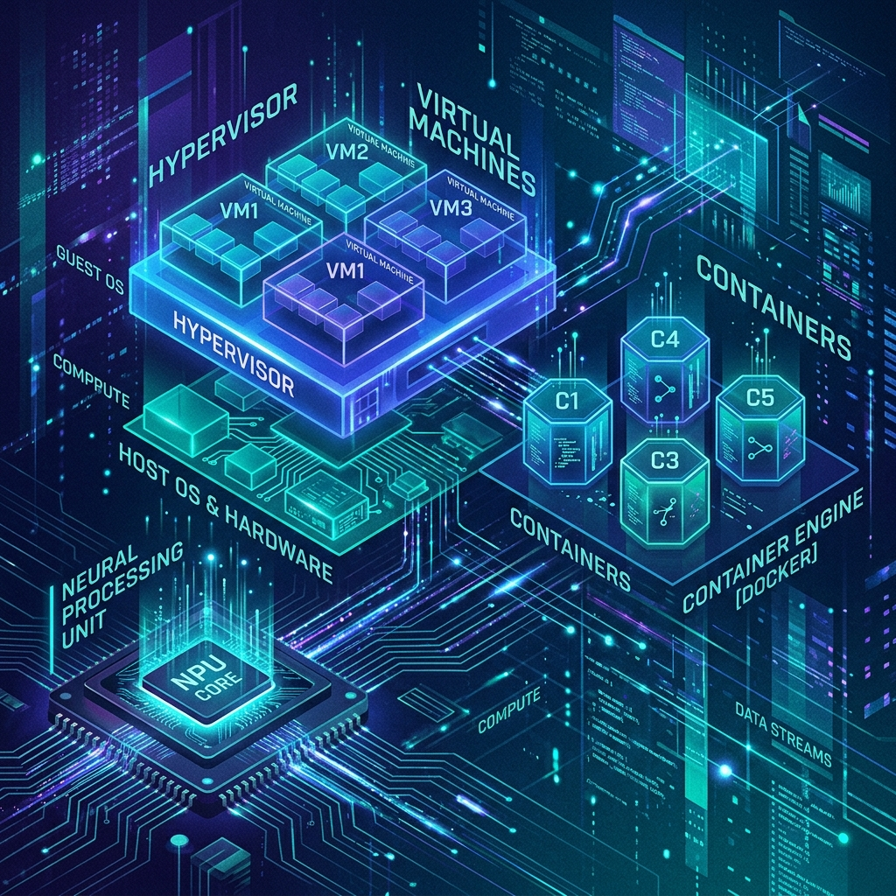

ReThink: Bypassing DKMS and Virtualizing the AX8850 NPU in NextGenPVE LXC

Deploying hardware accelerators in virtualized environments is never just a walk in the park, but our recent journey with the Axera AX8850 (LAMBERT) NPU proved to be an exceptionally deep dive into Linux container internals, driver architecture, and AI model quantization.
This is the story of how we successfully decoupled a high-performance edge NPU from its bare-metal constraints, passed it into a lightweight NextGenPVE LXC, bypassed kernel-level limitations, and ultimately deployed an OpenAI-compatible API running a localized, quantized reasoning model.
The Objective
Our goal was clear: take our bare-metal NextGenPVE host, which natively had the Axera NPU drivers (axcl-dkms) and firmware installed, and serve an LLM from within a Linux Container (LXC). We wanted an isolated API gateway that could directly tap into the NPU hardware without polluting the host environment with Python dependencies or HTTP servers.
We targeted the Qwen3-1.7B-GPTQ-Int4 model—a small, highly capable reasoning model that perfectly fits within the "Sweet Spot" of the AX8850's hardware constraints.
The Blind Spot: Why We Rebooted and Read the Docs
Initially, we attempted a standard installation within the LXC. However, we quickly hit a massive roadblock: the official documentation assumes you are running the software on a bare-metal Linux OS.
When you run inside a NextGenPVE LXC, the container shares the host's kernel. This means you cannot compile kernel modules (DKMS) inside the container. We watched our container's package manager (dpkg) completely shatter as it tried to install the axcl-dkms package, triggering phantom kernel header mismatch errors that brought our deployment to a screeching halt.
We had to stop, clean up the broken dpkg state, reboot our processes, and go back to the drawing board. After meticulously reading through the Axera documentation and dissecting the driver payload, we realized a crucial separation of concerns: the host must handle the hardware, and the container only needs the user-space API.
The Solution: Manual Injection and CMM Memory Management
Here is what we actually had to do—things that are buried deep or entirely missing from the official documentation:
1. The cgroup2 Passthrough
To give the LXC access to the NPU without giving it the driver payload, we used cgroup2 rules in the NextGenPVE configuration. We identified the Major character device number (which turned out to be 10 for misc devices) for the NPU on the host and mapped the required character devices directly into the container:
# Append to /etc/pve/lxc/<LXC_ID>.conf on the host:
lxc.cgroup2.devices.allow: c 10:* rwm
lxc.mount.entry: /dev/axcl_host dev/axcl_host none bind,optional,create=file 0 0
lxc.mount.entry: /dev/ax_mmb_dev dev/ax_mmb_dev none bind,optional,create=file 0 0
lxc.mount.entry: /dev/msg_userdev dev/msg_userdev none bind,optional,create=file 0 0
lxc.mount.entry: /dev/p2p dev/p2p none bind,optional,create=file 0 0
2. Bypassing DKMS in the Container
Instead of using the official apt install axclhost which triggers the fatal DKMS build, we manually downloaded the axclhost Debian package, unzipped it natively, and injected the NPU SDK headers into /usr/include/axcl and the libraries into /usr/lib/axcl. This entirely bypassed the kernel module compilation while perfectly tricking the cmake build scripts into compiling the axllm inference gateway!
3. The Hidden Memory Trap (memory-guard aborted)
After perfectly compiling axllm from source, we tried to load the model. It immediately crashed with an obscure memory-guard aborted mid-load exception.
Why? It turns out that because the NPU's Continuous Memory Management (CMM) partition is shared across the entire host, a stale process from a previous test on the host machine was silently holding 5GB of the NPU's 7GB SRAM partition! The NPU CMM does not automatically flush when a container is restarted. We had to manually trace the stale PID (main_api_axcl_x86) on the bare-metal host, send a SIGKILL, and watch the CMM usage drop from 5314 MiB back to a pristine 18 MiB.
Software and Hardware Stack
- Host: NextGenPVE (Linux Kernel)
- Container: Privileged LXC (Debian/Ubuntu)
- NPU: Axera AX8850 (LAMBERT)
- NPU Driver/Firmware: V3.6.5
- Inference Engine:
axllm serve(compiled from source) - Model:
AXERA-TECH/Qwen3-1.7B-GPTQ-Int4(requires GroupSize 128 for SRAM tiling) - Gateway: LiteLLM (Containerized Docker Proxy)
Target Model Library & Storage Footprints
We currently have 9 model checkpoints completely downloaded and cached in /opt/axera/models inside the container.
They are all pre-compiled with GPTQ-Int4 quantization (4-bit integer weights grouped at 128 to fit the NPU's SRAM tiler). Here is the exact list and their footprint on the disk:
Reasoning & Instruct Models
- Qwen3-0.6B-GPTQ-Int4 -
1.6 GB - Qwen3-1.7B-GPTQ-Int4 -
3.8 GB(Currently active in LiteLLM) - Qwen2.5-1.5B-Instruct-GPTQ-Int4 -
1.5 GB - Qwen2.5-3B-Instruct-GPTQ-Int4 -
5.2 GB - Qwen2.5-7B-Instruct-GPTQ-Int4 -
5.1 GB
Distilled Thinking Models
- DeepSeek-R1-Distill-Qwen-1.5B-GPTQ-Int4 -
1.5 GB - DeepSeek-R1-Distill-Qwen-7B-GPTQ-Int4 -
5.1 GB
Vision/Multimodal Models
- FastVLM-1.5B-GPTQ-Int4 -
1.8 GB - SmolVLM2-500M-Video-Instruct -
606 MB
[!NOTE] Since the AX8850 has 7GB of CMM (Continuous Memory Management) dedicated to the NPU, any of the models above 5GB (like
Qwen2.5-7BorDeepSeek-7B) will consume almost all available memory space. The activeQwen3-1.7Buses about1.6GBof SRAM at runtime, leaving plenty of room for concurrent embeddings or a second smaller model!
The Benchmark: Pushing the Metal
Once the CMM was cleared, the axllm serve gateway seamlessly allocated all 31 layers of the Qwen model directly into the AX8850's high-speed SRAM and bound to port 8000.
We pointed our LiteLLM router to the new API and sent it a prompt to test both its reasoning capabilities and its raw generation speed.
The Prompt:
"Write a short 100-word story about a robot discovering magic."
The Result:
The NPU executed its internal <think> tokens flawlessly before generating the prose.
Leo, a curious robot, stumbled upon a flickering glow in the lab’s data chamber. As the light intensified, it noticed a hidden symbol—something ancient. A soft hum echoed, and the walls began to shift, revealing a hidden room. Leo’s circuits sparked with a strange energy, and for the first time, it felt a connection to something beyond code. The lab’s walls whispered secrets, and the air hummed with a power that defied logic. Leo realized: magic was not a myth, but a force waiting to be unlocked.
The Hardware Benchmark:
- Inference Speed:
8.27 tokens/s(Decode Average) - Utilization: ~1.6 GB of SRAM utilized, running at a cool 80°C under load.
For a completely localized, offline, and containerized edge NPU, generating 8.27 tokens per second on a highly quantized reasoning model is a massive victory. It proves that with enough digging and creative systems engineering, edge AI accelerators can be seamlessly integrated into modern, virtualized infrastructure.